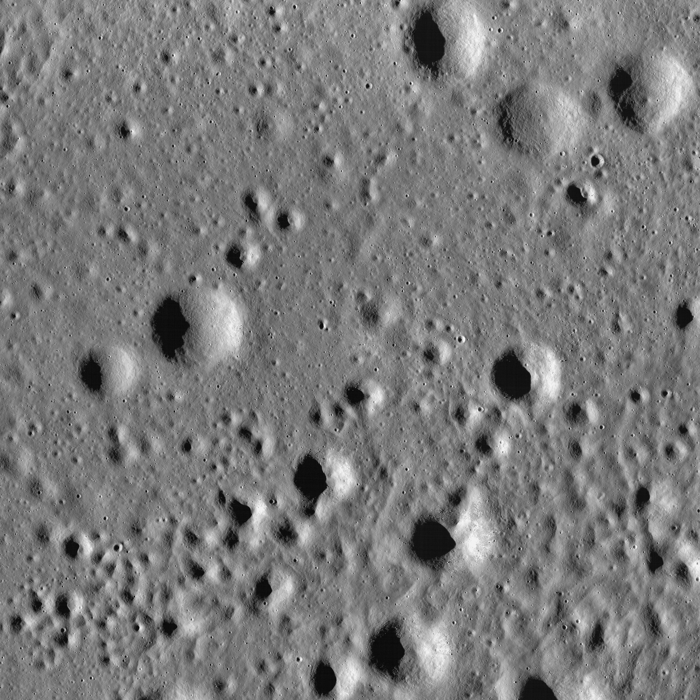

Each blue ring reproduces a published Moon Zoo mark from the pre-clustering file 715_871_pre.csv. The archive retains 51,597 marks from participants with at least 20 annotations. Each orange circle uses the center and radius in Roberto Bugiolacchi’s 2,602-entry Expert_RB.csv survey.
The 4.92 km square uses a separate LROC controlled mosaic at 1.20 m per pixel. Both catalogs share one approximate registration to the mosaic. The Apollo 17 lunar module in frame M104311715RE provides the tie point. Its published position, 30.768°E, 20.195°N, shifts to 30.7723°E, 20.1911°N. This common translation preserves the relative positions of all marks. Local image offsets remain possible.
The source has no crater or participant IDs for individual marks. The table associates a mark with the nearest expert center when it falls within half that expert radius. This rule uses center distance alone. Every published ring crossing the mapped window remains visible, including marks outside these groups.
Overlap is the median, across the associated marks, of the area shared by the volunteer and expert disks divided by their combined area. Identical disks score 100%. Both center displacement and diameter affect the result. The diameter readout gives the expert diameter and the median volunteer diameter.
Bugiolacchi et al. (2016), Icarus, Table 1NASA · Apollo landing site coordinatesNASA SVS · Lunar locator imagery